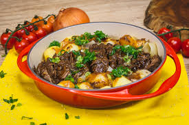
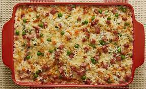

Minhas Receitas Culinárias
Bem-vindo ao "Minhas Receitas Culinárias", o seu destino online para descobrir e explorar uma variedade de deliciosas
receitas culinárias. Nossa página foi criada com amor e paixão pela culinária para todos aqueles que buscam
inspiração na cozinha.
O Que Oferecemos:
- Receitas Deliciosas: Aqui, você encontrará uma coleção diversificada de receitas, desde pratos
principais a sobremesas incríveis. As receitas são cuidadosamente elaboradas e explicadas passo a passo para que
todos, independentemente de sua experiência na cozinha, possam se aventurar e criar pratos incríveis.
- Dicas Úteis: Além de receitas deliciosas, compartilhamos dicas e truques para aprimorar suas
habilidades culinárias. Aprenda a preparar refeições incríveis, escolher ingredientes frescos e muito mais.
- Compartilhe Sua Criatividade: Encorajamos nossos leitores a compartilhar suas próprias receitas,
experiências e histórias culinárias. Afinal, a cozinha é um lugar onde a criatividade floresce.
- Comunidade Culinária: Junte-se à nossa comunidade de entusiastas da culinária. Interaja, faça
perguntas, compartilhe feedback e faça parte dessa jornada gastronômica conosco.
Nossa missão é inspirar e capacitar pessoas a explorar o mundo emocionante da culinária. Seja você um novato na
cozinha ou um chef experiente, há sempre algo novo para aprender e descobrir aqui.
Prepare-se para se apaixonar pela culinária, experimentar sabores incríveis e criar memórias deliciosas na cozinha.
Aventure-se conosco e comece a sua jornada culinária hoje!
Carne de Panela

receita e seus ingredientes:
- 1 1/2 kg de coxão mole
- 1/2 unidade de cebola ralada
- 5 dentes de alho
- 10 colheres (sobremesa) de azeite
- 2 folhas de louro
- 2 colheres (sopa) de cebolinha verde picada
- 2 colheres (sopa) de salsinha picada
- 5 unidades de batata descascadas
- 1 tablete de caldo de carne
Modo de preparo:
- Tempere a carne com salsa, cebolinha, 4 colheres azeite, 2 dentes de alho ralado e metade da cebola ralada.
- Deixe na geladeira descansando 1 hora.
- Em uma panela de pressão coloque 6 colheres de azeite, o restante da cebola, 3 alhos inteiros e doure-os.
- Coloque então a peça de carne junto com o tempero que foi para a geladeira.
- Doure todos os lados da carne e junte o louro, o caldo de carne e água quente (até a metade da carne).
- Feche a panela de pressão e deixe em fogo alto até pegar pressão.
- Assim que a pressão começar, abaixe o fogo e deixe por 40 minutos.
- Passado esse tempo, desligue o fogo e espere a pressão sair.
- Abra a panela para colocar as batatas descascadas.
- Volte a pressão no mesmo procedimento alta e depois baixa por mais 30 minutos.
- Retire as batatas e a carne da panela e deixe apenas o caldo da carne.
- Deixe o líquido reduzir e engrossar. Sirva o molho com a carne.
Arroz de Forno

receita e seus ingredientes:
- 1 colher (sopa) de óleo
- 1 xícara (chá) de arroz lavado e escorrido
- 2 xícaras (chá) de água fervente
- 2 xícaras (chá) de presunto em cubos pequenos (cerca de 200 g)
- 2 xícaras (chá) de queijo mozarela ralado (cerca de 200 g)
- meia lata de ervilha em conserva escorrida
- 1 cenoura cozida em cubos pequenos
- 1 colher (sopa) de salsa picada
- 2 colheres (sopa) de queijo parmesão ralado
Modo de preparo:
- Em uma panela, aqueça o óleo e refogue o arroz até que ele fique brilhante.
- Junte a água fervente e o MAGGI Meu Segredo 7 Vegetais e misture até dissolvê-lo.
- Cozinhe em fogo baixo, com a panela semitampada, por cerca de 15 minutos ou até a água secar.
- Sirva regado com a calda de maracujáDesligue o fogo e deixe a panela tampada por cerca de 5 minutos para
que o arroz termine o cozimento em seu próprio vapor.
- Em um recipiente refratário, misture o presunto, o queijo mozarela, a ervilha, a cenoura, a salsa e o arroz cozido.
- Polvilhe com queijo parmesão ralado e leve ao forno médio (180°C), preaquecido, por cerca de 30 minutos. Sirva.
MOUSSE DE MARACUJÁ
receita e seus ingredientes:
- 1 xícara de suco de maracujá concentrado (200 ml)
- 1 lata de leite condensado
- 1 lata de creme de leite
- 12 g de gelatina em pó incolor hidratada e derretida conforme instruções da embalagem
- Calda:
- Polpa com sementes de 2 maracujás maduros
- 1/2 xícara de água (chá)
Modo de preparo:
- Bata o suco de maracujá com o leite condensado e o creme de leite no liquidificador até obter um creme aerado.
- Incorpore a gelatina derretida e bata por 1 a 2 minutos para misturar bem.
- Distribua em taças individuais e leve à geladeira por 4 a 6 horas ou até ficar consistente.
- Sirva regado com a calda de maracujá.
Pudim
receita e seus ingredientes:
- 1 xícara (chá) de açúcar
- Meia xícara (chá) de água quente
- 1 lata de Leite MOÇA® (395 g)
- 2 medidas (da lata) de Leite Líquido NINHO® Forti+ Integral (790 ml)
- 3 ovos
Modo de preparo:
- Calda:
- Em uma panela de fundo largo, derreta o açúcar até ficar dourado.
- Junte a água quente e mexa com uma colher.
- Deixe ferver até dissolver os torrões de açúcar e a calda engrossar.
- Forre com a calda uma forma com furo central (19 cm de diâmetro) e reserve.
- Pudim:
- Em um liquidificador, bata todos os ingredientes do pudim e despeje na forma reservada.
- Cubra com papel-alumínio e leve ao forno médio (180°C), em banho-maria, por cerca de 1 hora e 30 minutos.
- Depois de frio, leve para gelar por cerca de 6 horas.
- Desenforme e sirva a seguir.